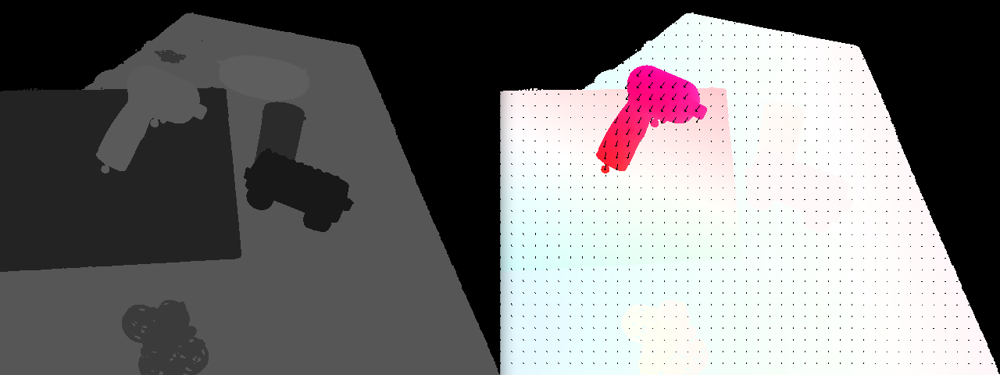

Ground Truth flow for EVIMO2
A tool is provided to calculate optical flow from the generated datasets. The source code for the tool is here
The output is equivalent to the MSEVC flow format.
Example usage:
evimo_flow.py [-h] [--dt DT] [--quiet] [--overwrite] [--wait] [--dframes DFRAMES] [files ...]
Notes
Because EVIMO2 does not have depth for background pixels, missing flow values are set to NaN.
The flow frame timestamps can skip when Vicon has lost track and ground truth depth is no longer available.
Example Image: 
Options
The tool accepts the following flags.
Flat |
Description |
|---|---|
|
Show this help message and exit |
|
dt for flow approximation |
|
Turns off OpenCV graphical output windows |
|
Overwrite existing output files |
|
Wait for keypress between visualizations (for debugging) |
|
Alternative to flow_dt, flow is calculated for time N depth frames ahead |
|
“evimo2v1” or “evimo2v2” input data format |